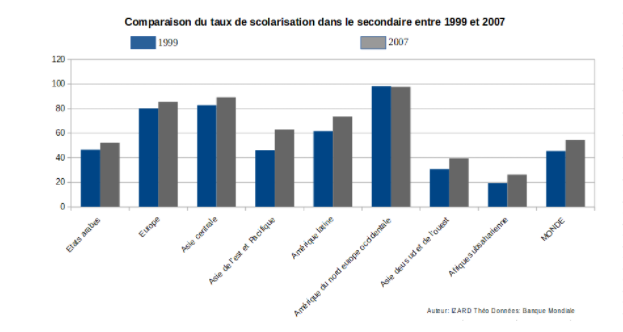

Le taux d'alphabétisation ne fait qu'augmenter au fil des années avec en 200 ans une courbe qui est complétement inversée passant de 15 % de la population mondiale alphabétisée et 85 % qui ne l'était pas au début des années 1800, à 85 % de la population alphabétisée pour 15 % d'analphabète en 2016. Depuis le début des années 1900 et l'ère industrielle une augmentation plus rapide de la part de la population alphabétisée est observée.
Malgrè un taux d'alphabétisation global qui est en forte augmentation, les différences entre les pays au niveau du taux d'alphabétisation de la population restent très disparate selon où on se trouve dans le monde. Les pays du Nord se distinguent par leur haut niveau d'alphabétisation (88%-100%), alors que les pays d'Afrique Subsaharien et de l'Asie du Sud ont des taux bien moins fort.
L'accès à l'éducation primaire pour la population est un impératif que toutes les nations ont su comprendre avec une augmentation globale depuis le début des années 1900. Les pays les moins dévelopées ont rattrapé leur retard ou sont entrain de le rattraper. Mais ces données sont à prendre avec prudence car le taux de scolarisation est souvent surestimé par les gouvernements à cause d'une partie des enfants sont scolarisée officiellement mais ne fréquente l'école qu'occasionnellement.
On a donc un taux globale qui augmente voir qui arrive au maximum de la population possible qui est dans le cycle primaire mais ce cycle reste pour beaucoup de pays le seul cycle auquel les populations jeunes vont aller.
Avec des taux pouvant dépasser les 50 % de taux d'éléves dans des pays d'Afrique ou d'Asie
Le nombre d’enfants non scolarisé au niveau secondaire et donc les inégalités entre les régions sont bien plus importantes qu’au primaire avec pour le 1er cycle de secondaire (collège) près de 61 millions d’enfants non scolarisés ce qui représente 16 % des enfants dans le monde. Les chiffres sont encore plus alarmants pour le 2ème cycle du secondaire avec 138 millions d’enfants non scolarisés ce qui représenterait selon l’Unesco 35 % des enfants dans le monde ayant l’âge d’y accéder.

Cette augmentation dans le niveau secondaire reste faible comparée au niveau primaire et est encore très hétérogène selon les régions dans le monde.
La carte ci-dessous nous montre les pays où très peu de la population a pu atteindre l'éducation secondaire et par conséquence l'enseignement supérieur
L'enseignement supérieur ou tertiaire est le moins représenté dans le monde avec des niveaux très faibles au niveau mondial mais cela semble s'inversés avec une éducation tertiaire qui va devenir importante dans les années à venir.
L’enseignement supérieur reste difficile d’accès et assez rare pour une grande partie de la population de certaines régions notamment à cause du prix de l’enseignement et des coûts induit (logement, nourriture,transport, fourniture scolaire…). De plus, l'accès est aussi limité à cause des infrastructures assez peu présentes dans de nombreux pays.
created with
Free Website Builder .